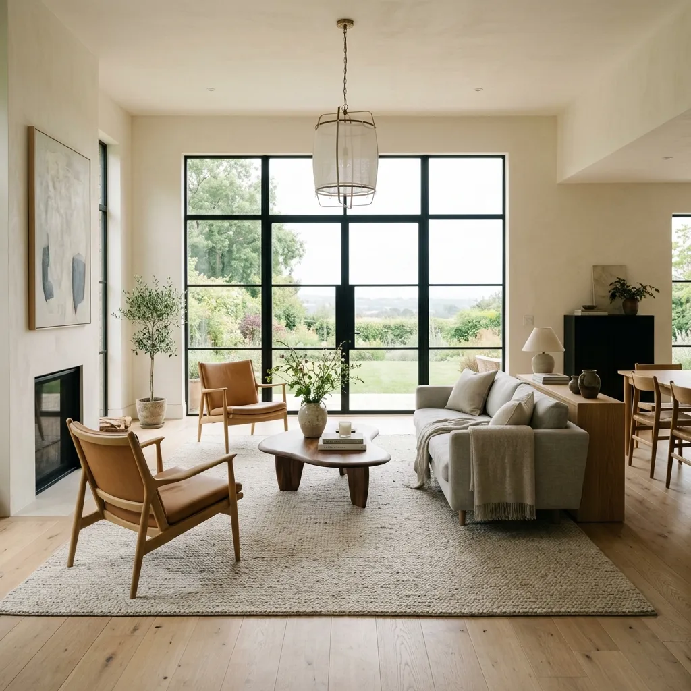
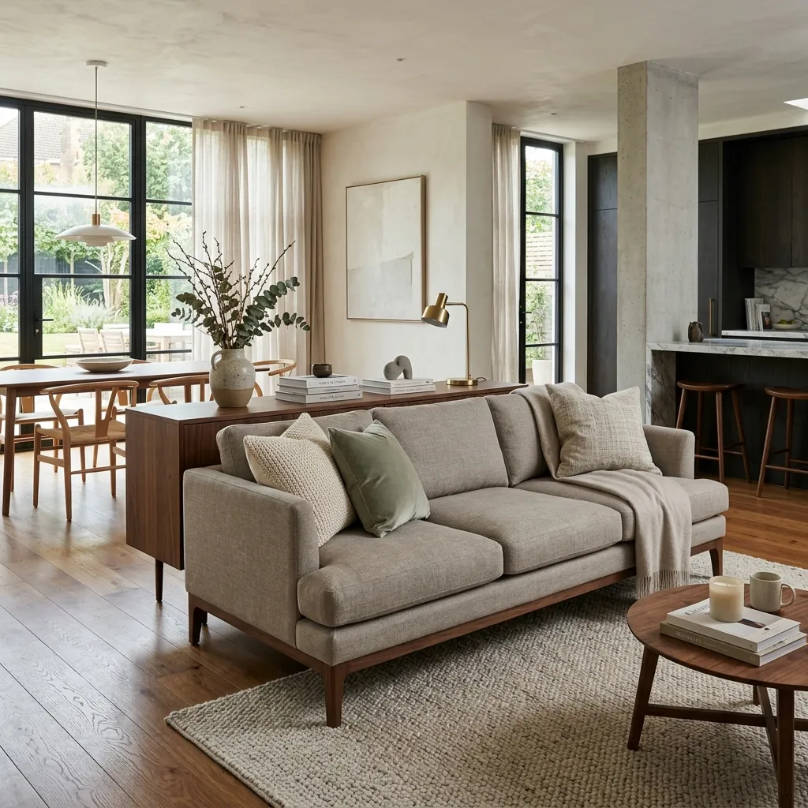
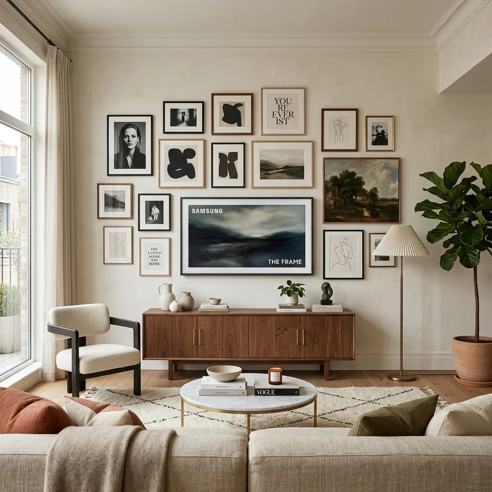

5 Common Living Room Layout Mistakes (And Exactly How to Fix Them)
Have you ever walked into a living room that just felt... off? Despite having beautiful furniture and expensive decor, the room somehow felt smaller, uninviting, or awkward. The culprit is almost always a bad layout.
We spend so much time obsessing over the color of our sofa, the pattern of our curtains, and the style of our coffee table, that we completely forget about space planning. But the truth is, the most expensive furniture in the world will look terrible if it is not placed correctly.
Interior design is as much about mathematics and psychology as it is about aesthetics. How we arrange our living room furniture dictates how we interact with our family, how we relax, and how the energy flows through our home. If you feel like your living room is just a waiting area to watch TV, it is time for a change.
In this comprehensive guide, we are going to break down the five most common living room layout mistakes that interior designers see every single day, and give you the exact, actionable steps to fix them. Let’s reclaim your space.

Mistake 1: The "Wallflower" Furniture Syndrome
This is undeniably the number one mistake people make when figuring out how to arrange living room furniture. In an attempt to make the room feel larger, homeowners push every single piece of furniture—the sofa, the armchairs, the bookshelves—flush against the walls.
What happens next? You create a giant, awkward dance floor in the middle of your living room. People sitting on the sofa have to yell across the room to talk to someone in the armchair. It destroys intimacy and actually makes the room feel chaotic and unstructured.
THE FIX: FLOAT YOUR FURNITURE
Pull your furniture away from the walls! Even pulling your sofa just 12 to 18 inches away from the wall creates a shadow line that makes the room feel more expansive and airy.
Bring your seating pieces closer together to create a cozy "conversation zone." Ideally, no two seating pieces should be more than 8 feet apart. If you have an open-concept living space, you can use the back of your floating sofa to act as a natural room divider between the living area and the dining area.

Mistake 2: The "Floating Island" Rug
If you have a beautiful sofa and stunning accent chairs, but they are surrounding a tiny 5x7 rug that is floating aimlessly underneath the coffee table, the entire room will look disconnected. A rug that is too small makes the room look cheaper and smaller than it actually is. It acts like a visual island that your furniture is stranded around.
In interior design, an area rug is meant to anchor the room. It defines the specific "zone" for relaxing.
The Golden Rules of Rug Placement:
- The Ideal Goal: All four legs of your main furniture pieces (sofa and chairs) should sit completely on the rug. This requires a large rug, typically 9x12 or larger.
- The Acceptable Compromise: If a massive rug isn't in your budget, ensure that at least the front two legs of your sofa and your accent chairs are resting securely on the rug.
- The Absolute Minimum: The rug should extend at least 6 inches past the sides of your sofa.
When you buy a rug that is properly scaled for the room, it visually connects all the disparate pieces of furniture into one unified, cohesive space.
Mistake 3: Ignoring Traffic Flow and Pathways
Have you ever been in a living room where you have to squeeze past the coffee table, carefully step over an extension cord, and bump your hip against a side table just to sit down? This is a symptom of poor traffic flow.
When planning your living room layout ideas, you must account for how human beings actually move through the space. A room can look gorgeous in a photograph, but if you cannot navigate it without performing gymnastics, it is a bad design.
THE FIX: MEASURE YOUR PATHWAYS
You need to establish clear, unobstructed "highways" through your room. The main pathway (for example, from the hallway to the kitchen) should be at least 30 to 36 inches wide.
Furthermore, ensure there is about 14 to 18 inches of space between your coffee table and your sofa. This is close enough to comfortably reach your drink, but wide enough that you do not constantly bang your shins. If your room is very narrow, consider swapping a bulky rectangular coffee table for two smaller, round nesting tables to improve the flow.
Mistake 4: Creating a "TV Shrine"
In modern homes, the television is a central part of life. There is nothing wrong with having a large TV. The mistake occurs when the television becomes the only focal point of the room, turning your living room into a sterile movie theater.
When every single piece of furniture is pointed directly at the black rectangular screen on the wall, it sends a clear message: the only thing to do in this room is stare at a screen. It actively discourages conversation and eye contact.
How to Rebalance the Room:
- Create Competing Focal Points: If your TV is on one wall, make sure another wall has a stunning piece of large-scale art, a beautiful fireplace, or a styled bookshelf.
- Use Perpendicular Seating: Instead of a single sofa facing the TV, use a sofa facing the TV, but place two comfortable accent chairs facing each other on either side of the coffee table. This setup accommodates movie nights but also invites face-to-face conversation.
- Blend the Tech: Use a gallery wall around your TV or invest in a Frame TV so the black screen doesn't dominate the aesthetic of the room when it's turned off.

Mistake 5: Poor Scale and Proportion
Have you ever seen a massive, overstuffed sectional sofa paired with a tiny, delicate wire coffee table? Or a huge living room with a tiny piece of 8x10 art floating in the middle of a massive blank wall? This is an issue of scale.
Scale refers to how the size of the objects in the room relate to each other, and to the room itself. If everything in the room is heavy and bulky (a thick sofa, a heavy oak coffee table, thick armchairs), the room feels heavy and cramped. If everything is delicate and spindly, the room feels ungrounded and cheap.
THE FIX: MIX THE VISUAL WEIGHT
Successful interior design requires a mix of visual weights. If you have a solid, heavy sofa that goes all the way to the floor, pair it with accent chairs that have exposed wooden legs to create visual breathing room.
Similarly, pay attention to height. If all your furniture (sofa, coffee table, side chairs) sits at the exact same height, the room will look completely flat. Draw the eye upward by adding a tall floor lamp, a high bookshelf, or hanging your curtains as high as possible, close to the ceiling line.
Frequently Asked Questions
How do I arrange furniture in a long, narrow living room?
The biggest mistake in a narrow room is lining furniture up against both walls like a bowling alley. Instead, break the room into two distinct "zones." Use the larger area for your main seating (a sofa and two small chairs), and use the remaining space for a small reading nook or a home workspace. Use round furniture (like a circular coffee table) to break up the harsh straight lines of the room.
Is it okay to put a sofa in front of a window?
Yes, absolutely! While keeping windows clear is ideal for natural light, sometimes the architecture of a room requires placing a sofa in front of a window. Just make sure the sofa has a relatively low back so it doesn't block the view or the sunlight. You want the light to spill over the furniture, not be blocked by it.
How much walking space should be between furniture?
As a general rule of thumb, you should allow at least 14 to 18 inches of space between a coffee table and a sofa for legroom. For main walkways and traffic paths, you need a minimum of 30 to 36 inches to walk comfortably without turning your body or bumping into things.